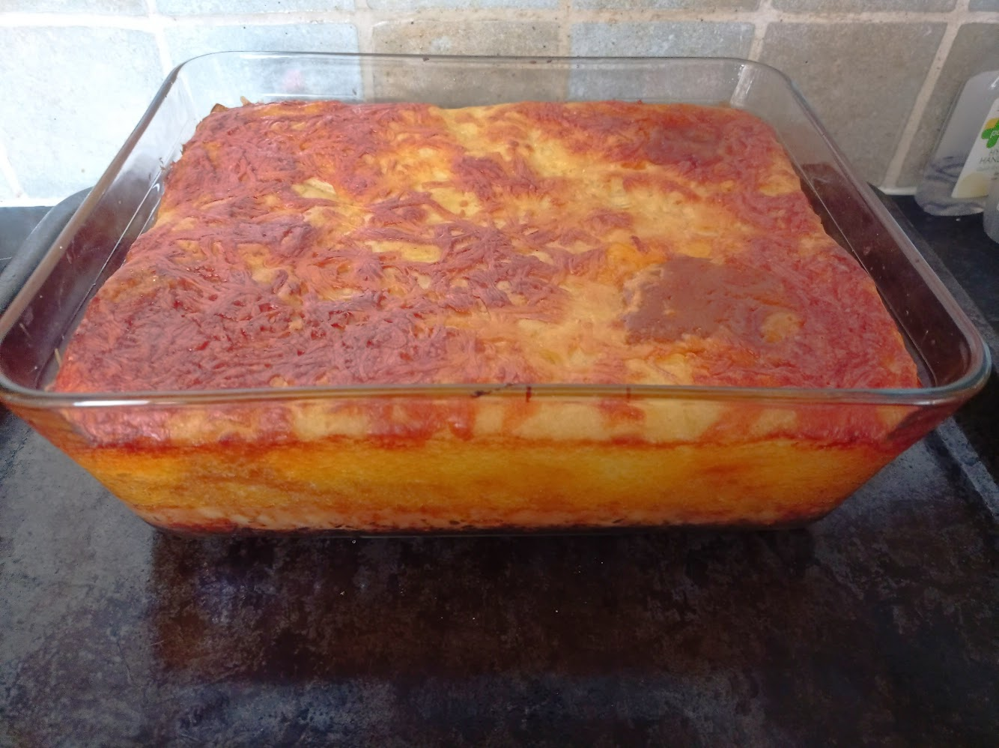

Lasagne

An Italian comfort food classic
A true classic of Italian cuisine, sure to please the whole family
Our version of lasagne is made with store cupboard staples and bulked out with lentils to make it healthier and more filling
Ingredients
- Dried lasagne sheets
- Beef mince
- Pork mince
- Italian seasoning
- Milk
- Cheese
- Butter
- Flour
- Beef stock cube
- Onion
- Garlic
- Red lentils
- Tomato puree
Steps
- Fry onions until transluscent
- Add beef and pork and fry until dark brown
- Crush garlic and add to pan until fragrant
- Add tomato puree to pan and fry for one minute
- Make up beef stock according to packet instructions
- Add beef stock to pan and simmer until reduced, then leave aside
- Start making the bechamel by melting butter and flour in the pan and cooking for 1 min
- Slowly stir in the milk and allow to thicken
- Arrange the lasagne in a baking dish in layers to your liking
- Top with the bechamel and plenty of cheese and bake